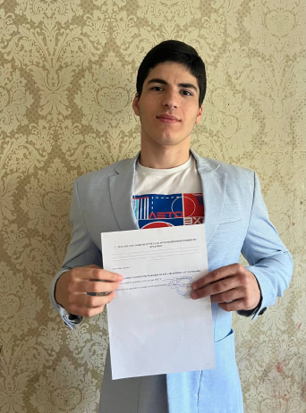

Футбольный клуб FC GAZAN, основанный в 1985 году, является одним из наиболее уважаемых и успешных клубов в мире футбола. Этот клуб имеет богатую историю, наполненную значимыми победами и многочисленными достижениями.
FC GAZAN располагает современным стадионом, в котором проводятся матчи команды как национального, так и международного уровней. Стадион вмещает более 50 000 зрителей и является одним из самых посещаемых спортивных объектов в стране.
Легенда о клубе FC GAZAN началась с победы на чемпионате своего регионального дивизиона еще в первый год существования команды.
Главный тренер команды, признанный мастер своего дела, успешно справляется с задачами и с каждым годом развивает и укрепляет команду. Философия клуба FC GAZAN основана на высоком профессионализме, стремлении к победе и инновационном подходе к тренировкам.
Клуб гордится своей историей и стремится создать успешное будущее, как на футбольном поле, так и вне его.
